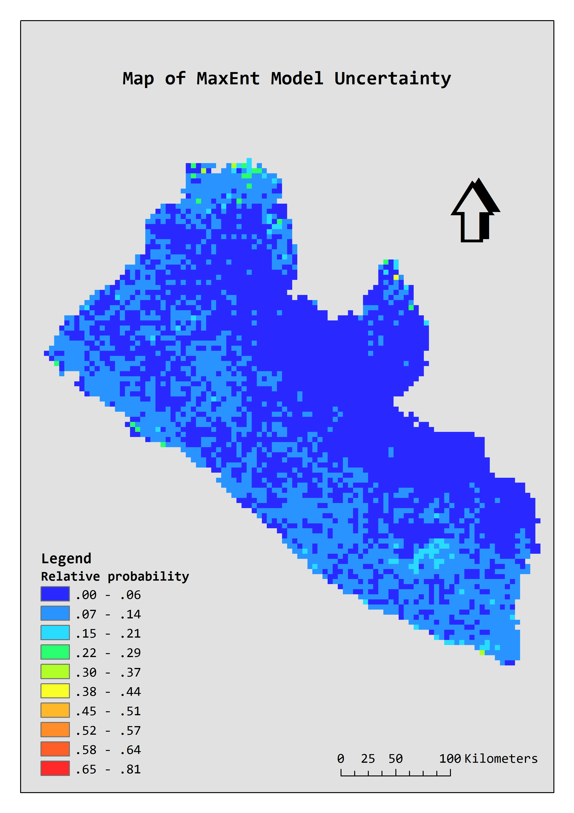
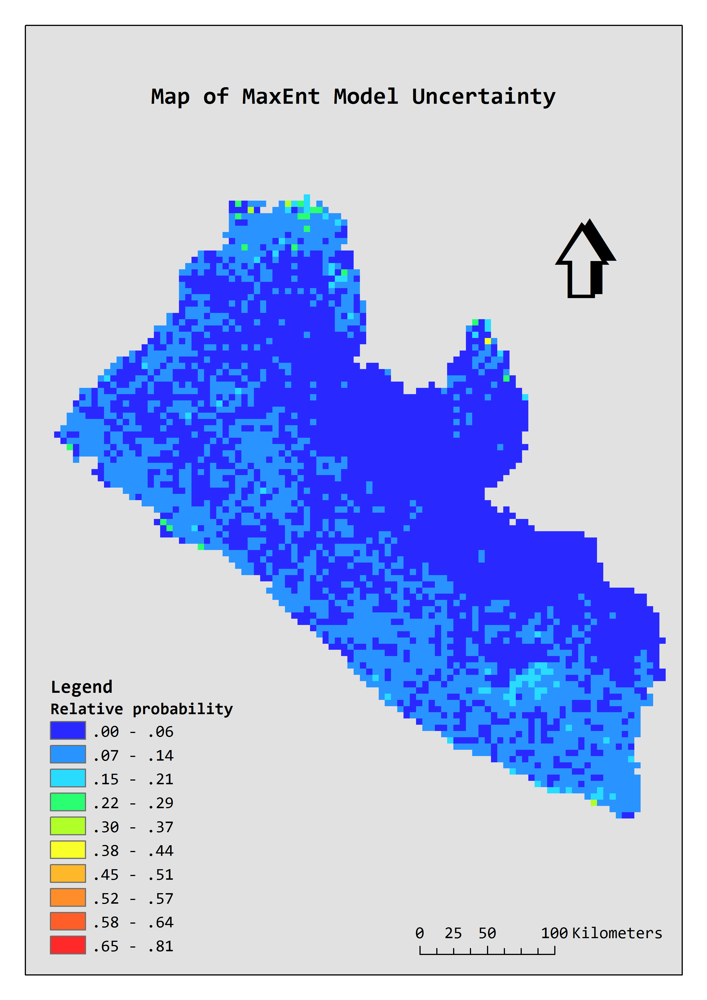

CASE STUDY: Mapping the potential geographic distribution of surface water drinking sources in Liberia
Achieving universal and equitable access to safe and affordable drinking water for all requires evidence-based assessments to identify the disadvantaged areas and prioritise those with the most needs accordingly.
To facilitate drinking water infrastructure development to deliver safe and sustainable water services for all,
it is necessary to locate the people still using disadvantaged water services across the country.
Surface water at the bottom of WHO/UNICEF Joint Monitoring Programme (JMP)’s water ladder refers to drinking water directly from open sources such as a river, stream, lake, dam, pond, canal or irrigation channel.
Fetching water from open sources may pick up contaminants and pathogens;
without proper treatment before use, it may cause serious health effects.
Although conventional geospatial datasets concerning drinking water services generally contain comparatively limited information on surface water sources,
more newly released datasets combining machine learning predictive modelling methods makes it possible to predict the potential spatial distribution of specific types of disadvantaged water service such as surface water.
This study uses a novel machine learning algorithm named maximum entropy (MaxEnt) to predict the potential spatial distribution of surface water drinking sources in Liberia.
Surface water point data derived from the Water Point Exchange are employed as observed occurrence sample of surface water;
whilst data indicating factors that may be potentially important determinants of the spatial distribution of surface water drinking sources are used as predictive covariates for the MaxEnt modelling.
More details about the methodology can be found at the download page.
Model inputs:

Top to bottom, left to right: (1) surface water sample (derived from WPDx); (2) bias layer; (3) distance to inland water (derived from DCW); (4) elevation (derived from ASTER GDEM, product of NASA and METI);
(5) slope (derived from ASTER GDEM, product of NASA and METI); (6) annual rainfall (derived from WorldClim); (7) depth to groundwater (derived from Equilibrium Water Table Africa Model by Fan et al., 2013);
(8) distance to villages (derived from OpenStreetMap); (9) distance to roads (derived from OpenStreetMap); (10) improved water source coverage (derived from DHS modelled surfaces);
(11) coverage of open defecation (derived from DHS modelled surfaces); (12) land cover (derived from MODIS Land Cover Type (MCD12Q1) version 5.1).
Result:
The following maps show the 5km resolution predicted potential spatial distribution of surface water sources in Liberia.
This is merely a simplified model for the illustration of this idea.
A comparatively precise model can be conducted at finer resolution with sufficient geospatial data and a systematic conceptual framework identifying technical and socio-economic factors that may affect the distribution of specific water sources.
Surely, such prediction should not directly replace national scale water point inventory or nationally representative household surveys.
However, it could give a brief indication of the likely spatial distribution of specific type of water sources in areas where data is lacking.
 

|